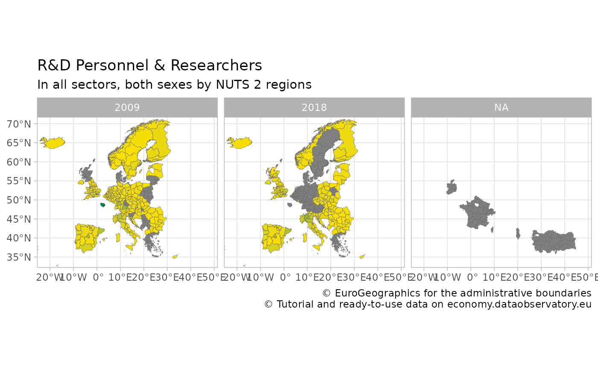
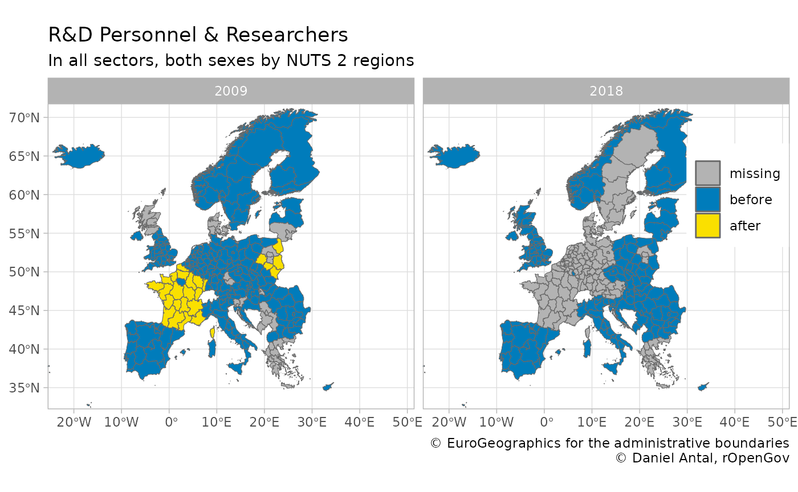

Mapping Regional Data, Mapping Metadata Problems
Daniel Antal, CFA
2023-03-06
Source:vignettes/articles/mapping.Rmd
mapping.RmdThe regions package offers tools two work with regional statistics. It is an offspring of the eurostat package of rOpenGov, which offers data search, download, manipulation and visualization for Eurostat’s European statistics. While you can use regions for any European regional statistics, and with a limited functionality, any regional statistics from other parts of the world, this article provides a combined use case for the two packages.
Eurostat’s main function for data access is get_eurostat(), but in this case we will use the more specific get_eurostat_json to avoid downloading unnecessary aspects of this data product. Let us get a long-established regional dataset, the full-time equivalent (FTE) R&D workforce, in both sexes, in all sectors and all professional positions, and limit our data to two years only:
regional_rd_personnel <- eurostat::get_eurostat_json(
id = "rd_p_persreg",
filters = list(
sex = "T",
prof_pos = "TOTAL",
sectperf = "TOTAL",
unit = "FTE"
)
)
regional_rd_personnel <- regional_rd_personnel %>%
filter(.data$time %in% c("2009", "2018"))We have saved this filtered datasets as
regional_rd_personnel in the regions package.
data("regional_rd_personnel")We have quiet a few missing cases:
But this is not the only problem with the dataset.
Choropleth Map
Let us try to place the data on a ggplot2 map.
Let us download a map with get_eurostat_geospatial.
We will use the NUTS2016, i.e., year = 2016,
which is the regional boundary definition set in 2016 and used in the
period 2018-2020. This is the most used definition in 2021.
map_nuts_2 <- eurostat::get_eurostat_geospatial(
resolution = "60",
nuts_level = "2",
year = 2016
)
#> Loading required namespace: sf
#> sf at resolution 1:60 read from local file
#> Warning in eurostat::get_eurostat_geospatial(resolution = "60", nuts_level =
#> "2", : Default of 'make_valid' for 'output_class="sf"' will be changed in the
#> future (see function details).You should always join your data with the geometric information of the regions starting from left with the map:
indicator_with_map <- map_nuts_2 %>%
left_join(regional_rd_personnel, by = "geo")
#> Warning in sf_column %in% names(g): Each row in `x` is expected to match at most 1 row in `y`.
#> ℹ Row 1 of `x` matches multiple rows.
#> ℹ If multiple matches are expected, set `multiple = "all"` to silence this
#> warning.Huge parts of Europe are not covered, but the missing values are not randomly missing. France went under a regional reform; Turkey and Albania did not provide this data earlier. Ireland has no regional statistics available.
indicator_with_map %>%
ggplot() +
geom_sf(aes(fill = values),
color = "dim grey", size = .1
) +
scale_fill_gradient(low = "#FAE000", high = "#00843A") +
facet_wrap(facets = "time") +
labs(
title = "R&D Personnel & Researchers",
subtitle = "In all sectors, both sexes by NUTS 2 regions",
caption = "\ua9 EuroGeographics for the administrative boundaries
\ua9 Tutorial and ready-to-use data on economy.dataobservatory.eu",
fill = NULL
) +
theme_light() +
theme(legend.position = "none") +
coord_sf(xlim = c(-22, 48), ylim = c(34, 70))
Missing Values and Seemingly Missing Values
Some of these problems are real missing data problems, but some of
them are coding problem. In other words, the data is there, but it is
not conforming the boundaries that you have on the NUTS2016
map. First we need to validate the geographical coding of the dataset.
This is the task of validate_nuts_regions().
validated_indicator <- regions::validate_nuts_regions(regional_rd_personnel)If we validate the dataset, we will see many interesting metadata observations.
library(dplyr)
validation_summary_2016 <- validated_indicator %>%
group_by(.data$time, .data$typology) %>%
summarize(
observations = n(),
values_missing = sum(is.na(.data$values)),
values_present = sum(!is.na(.data$values)),
valid_present = values_present / observations
)Even though the dataset is called R&D
personnel and researchers by sector of performance, sex and NUTS 2
regions (rd_p_persreg), in fact, it contains data on country and
NUTS1 levels. And it has data on non-EU countries that in
2009 were not part of the NUTS system.
validation_summary_2016 %>%
ungroup() %>%
filter(.data$time == "2009")
#> # A tibble: 7 × 6
#> time typology observations values_missing values_present valid_p…¹
#> <chr> <chr> <int> <int> <int> <dbl>
#> 1 2009 country 28 1 27 0.964
#> 2 2009 non_eu_country 7 2 5 0.714
#> 3 2009 non_eu_nuts_level_1 7 4 3 0.429
#> 4 2009 non_eu_nuts_level_2 10 5 5 0.5
#> 5 2009 nuts_level_1 105 14 91 0.867
#> 6 2009 nuts_level_2 265 49 216 0.815
#> 7 2009 NA 56 3 53 0.946
#> # … with abbreviated variable name ¹valid_presentThe situation is not better in 2018:
validation_summary_2016 %>%
ungroup() %>%
filter(.data$time == "2018")
#> # A tibble: 7 × 6
#> time typology observations values_missing values_present valid_p…¹
#> <chr> <chr> <int> <int> <int> <dbl>
#> 1 2018 country 28 0 28 1
#> 2 2018 non_eu_country 7 1 6 0.857
#> 3 2018 non_eu_nuts_level_1 7 1 6 0.857
#> 4 2018 non_eu_nuts_level_2 10 0 10 1
#> 5 2018 nuts_level_1 105 45 60 0.571
#> 6 2018 nuts_level_2 265 113 152 0.574
#> 7 2018 NA 56 45 11 0.196
#> # … with abbreviated variable name ¹valid_presentThe dataset is plagued with data that has no place in the
NUTS2016 boundary definition, and therefore on a
NUTS2016 map!
What are the non-conforming bits?
validated_indicator %>%
filter(!.data$valid_2016) %>%
select(all_of("geo")) %>%
unlist() %>%
as.character()
#> [1] "BA" "BA" "CN_X_HK" "CN_X_HK" "EA19" "EA19"
#> [7] "EU27_2020" "EU27_2020" "EU28" "EU28" "FR2" "FR2"
#> [13] "FR21" "FR21" "FR22" "FR22" "FR23" "FR23"
#> [19] "FR24" "FR24" "FR25" "FR25" "FR26" "FR26"
#> [25] "FR3" "FR3" "FR30" "FR30" "FR4" "FR4"
#> [31] "FR41" "FR41" "FR42" "FR42" "FR43" "FR43"
#> [37] "FR5" "FR5" "FR51" "FR51" "FR52" "FR52"
#> [43] "FR53" "FR53" "FR6" "FR6" "FR61" "FR61"
#> [49] "FR62" "FR62" "FR63" "FR63" "FR7" "FR7"
#> [55] "FR71" "FR71" "FR72" "FR72" "FR8" "FR8"
#> [61] "FR81" "FR81" "FR82" "FR82" "FR83" "FR83"
#> [67] "FRA" "FRA" "HR02" "HR02" "HU10" "HU10"
#> [73] "IE01" "IE01" "IE02" "IE02" "JP" "JP"
#> [79] "KR" "KR" "LT00" "LT00" "NO01" "NO01"
#> [85] "NO03" "NO03" "NO04" "NO04" "NO05" "NO05"
#> [91] "PL1" "PL1" "PL11" "PL11" "PL12" "PL12"
#> [97] "PL3" "PL3" "PL31" "PL31" "PL32" "PL32"
#> [103] "PL33" "PL33" "PL34" "PL34" "RU" "RU"
#> [109] "UKM2" "UKM2" "UKM3" "UKM3"- Plenty of French units. France went under a regional administrative reform, and we have data about its past, but not in the current boundaries and coding.
- To a lesser extent, we have the same problem with Poland and the UK.
- We have comparative data from Asia on country level, which ended up in a regional dataset.
- We have Norway, which is a member of the EEA, and from 2021 it is officially part of the NUTS2021 system. They were nice to provide their data consistently for the past.
- We have aggregates like the entire EU or the eurozone.
Recoding and Renaming
The question is, can we save some of the French data? If the boundaries of regions changed, then we cannot: somebody must reaggregate the number of researchers who used to work in the newly defined region back then, before the reform.
But in some cases, the regional boundaries did not change, only the name and the code of the region, which is the task performed by recode_nuts():
recoded_indicator <- regional_rd_personnel %>%
regions::recode_nuts(
geo_var = "geo", # your geograhical ID variable name
nuts_year = 2016 # change this for other definitions
)
recoding_summary <- recoded_indicator %>%
mutate(observations = nrow(.data)) %>%
mutate(typology_change = ifelse(grepl("Recoded", .data$typology_change),
yes = "Recoded",
no = .data$typology_change
)) %>%
group_by(.data$typology_change, .data$time) %>%
summarize(
values_missing = sum(is.na(.data$values)),
values_present = sum(!is.na(.data$values)),
pct = values_present / (values_present + values_missing)
)Let us take a look at the problems identified by
regions::recode_nuts():
recoding_summary
#> # A tibble: 12 × 5
#> # Groups: typology_change [6]
#> typology_change time values_missing values_present pct
#> <chr> <chr> <int> <int> <dbl>
#> 1 Not found in NUTS 2009 1 11 0.917
#> 2 Not found in NUTS 2018 1 11 0.917
#> 3 Recoded 2009 12 42 0.778
#> 4 Recoded 2018 32 22 0.407
#> 5 Used in NUTS 1999-2013 2009 1 7 0.875
#> 6 Used in NUTS 1999-2013 2018 8 0 0
#> 7 Used in NUTS 2006-2013 2009 0 5 1
#> 8 Used in NUTS 2006-2013 2018 5 0 0
#> 9 Used in NUTS 2021-2021 2009 0 1 1
#> 10 Used in NUTS 2021-2021 2018 1 0 0
#> 11 unchanged 2009 64 334 0.839
#> 12 unchanged 2018 158 240 0.603We were able to recode quite a few data points to the
NUTS2016definition for the time of observation 2009 as well as 2018. Sometimes we are recoding rows that have missing values, which does not help that much: we know where the data should be, but it is missing anyway. But particularly for the year 2009 we can save plenty of data by recorded the obsolete coding.We identify further problems. We have coding the that was used in various time periods, but there is no clear recoding possibility, because the regions boundaries have changed. To have the history of the data, we would need to recalculate them, say, by adding up the R&D personnel from each settlement in the new regional boundary.
The following non-empty cases were present in the dataset, just not
with the coding that we used in the 2018-2020 period (i.e., the
NUTS2016 coding.) We are able to save 27 observations just
by fixing the regional codes!
recoded_indicator %>%
filter(.data$typology == "nuts_level_2") %>%
filter(!is.na(.data$typology_change)) %>%
filter(
# Keep only pairs where we actually save
# non-missing observations
!is.na(values)
) %>%
distinct(.data$geo, .data$code_2016) %>%
filter(
# We filter out cases of countries who
# joined the NUTS system later
.data$geo != .data$code_2016
)
#> # A tibble: 27 × 2
#> geo code_2016
#> <chr> <chr>
#> 1 FR21 FRF2
#> 2 FR22 FRE2
#> 3 FR23 FRD2
#> 4 FR24 FRB0
#> 5 FR25 FRD1
#> 6 FR26 FRC1
#> 7 FR3 FRE1
#> 8 FR30 FRE1
#> 9 FR41 FRF3
#> 10 FR42 FRF1
#> # … with 17 more rowsSo, let us do the trick: change the geo variable to
code_2016, which is, whenever there is an equivalent
geo code in the NUTS2016 definition, the data
that you should have. Your original geo variable contains codes that
were used, for example, in the NUTS2010 or
NUTS2013 boundary definitions.
recoded_with_map <- map_nuts_2 %>%
left_join(
recoded_indicator %>%
mutate(geo = .data$code_2016),
by = "geo"
)
#> Warning in sf_column %in% names(g): Each row in `x` is expected to match at most 1 row in `y`.
#> ℹ Row 1 of `x` matches multiple rows.
#> ℹ If multiple matches are expected, set `multiple = "all"` to silence this
#> warning.Let us make our work visible by creating three observation
type variables:
-
missingwhich is not present in the dataset; -
beforewhich were correctly coded before our recoding; -
afterwhich became visible after recoding.
regional_rd_personnel_recoded <- recoded_indicator %>%
mutate(geo = .data$code_2016) %>%
rename(values_2016 = .data$values) %>%
select(-all_of(c("typology", "typology_change", "code_2016"))) %>%
full_join(
regional_rd_personnel,
by = c("prof_pos", "sex", "sectperf", "unit", "geo", "time")
) %>%
mutate(type = case_when(
is.na(.data$values_2016) & is.na(.data$values) ~ "missing",
is.na(.data$values) ~ "after",
TRUE ~ "before"
))
#> Warning: Use of .data in tidyselect expressions was deprecated in tidyselect 1.2.0.
#> ℹ Please use `"values"` instead of `.data$values`And let’s place it now on the map:
map_nuts_2 %>%
left_join(regional_rd_personnel_recoded, by = "geo") %>%
filter(
# remove completely missing cases
!is.na(.data$time)
) %>%
ggplot() +
geom_sf(aes(fill = type),
color = "dim grey", size = .1
) +
scale_fill_manual(values = c("#FAE000", "#007CBB", "grey70")) +
guides(fill = guide_legend(reverse = T, title = NULL)) +
facet_wrap(facets = "time") +
labs(
title = "R&D Personnel & Researchers",
subtitle = "In all sectors, both sexes by NUTS 2 regions",
caption = "\ua9 EuroGeographics for the administrative boundaries
\ua9 Daniel Antal, rOpenGov",
fill = NULL
) +
theme_light() +
theme(legend.position = c(.93, .7)) +
coord_sf(xlim = c(-22, 48), ylim = c(34, 70))
#> Warning in sf_column %in% names(g): Each row in `x` is expected to match at most 1 row in `y`.
#> ℹ Row 1 of `x` matches multiple rows.
#> ℹ If multiple matches are expected, set `multiple = "all"` to silence this
#> warning.
Conclusion
We did improve our dataset, and this improvement would not have worked with traditional imputation techniques very well. For example, replacing the missing French data with the median value of Europe would have created a huge bias in our dataset.
This example is a simplification. There are many territorial typologies in use in Europe and globally, but the main takeaway is clear: sub-national boundaries are changing very fast, and you must make sure that you join datasets, or data with a map with the same boundary definitions.
Citations and related work
Citing the data sources
Eurostat data: cite Eurostat.
Administrative boundaries: cite EuroGeographics.
Citing the eurostat R package
For main developers and contributors, see the package homepage.
This work can be freely used, modified and distributed under the BSD-2-clause (modified FreeBSD) license:
citation("eurostat")
#>
#> Kindly cite the eurostat R package as follows:
#>
#> (C) Leo Lahti, Janne Huovari, Markus Kainu, Przemyslaw Biecek.
#> Retrieval and analysis of Eurostat open data with the eurostat
#> package. R Journal 9(1):385-392, 2017. doi: 10.32614/RJ-2017-019
#> Package URL: http://ropengov.github.io/eurostat Article URL:
#> https://journal.r-project.org/archive/2017/RJ-2017-019/index.html
#>
#> A BibTeX entry for LaTeX users is
#>
#> @Article{,
#> title = {Retrieval and Analysis of Eurostat Open Data with the eurostat Package},
#> author = {Leo Lahti and Janne Huovari and Markus Kainu and Przemyslaw Biecek},
#> journal = {The R Journal},
#> volume = {9},
#> number = {1},
#> pages = {385--392},
#> year = {2017},
#> doi = {10.32614/RJ-2017-019},
#> url = {https://doi.org/10.32614/RJ-2017-019},
#> }Citing the regions R package
For main developer and contributors, see the package.
This work can be freely used, modified and distributed under the GPL-3 license:
citation("regions")
#>
#> To cite package 'regions' in publications use:
#>
#> Antal D (2021). _regions: Processing Regional Statistics_. R package
#> version 0.1.8, <https://regions.dataobservatory.eu/>.
#>
#> A BibTeX entry for LaTeX users is
#>
#> @Manual{,
#> title = {regions: Processing Regional Statistics},
#> author = {Daniel Antal},
#> year = {2021},
#> note = {R package version 0.1.8},
#> url = {https://regions.dataobservatory.eu/},
#> }Contact
For contact information, see the package homepage.
Version info
This tutorial was created with
sessionInfo()
#> R version 4.2.2 (2022-10-31)
#> Platform: x86_64-pc-linux-gnu (64-bit)
#> Running under: Ubuntu 22.04.2 LTS
#>
#> Matrix products: default
#> BLAS: /usr/lib/x86_64-linux-gnu/openblas-pthread/libblas.so.3
#> LAPACK: /usr/lib/x86_64-linux-gnu/openblas-pthread/libopenblasp-r0.3.20.so
#>
#> locale:
#> [1] LC_CTYPE=C.UTF-8 LC_NUMERIC=C LC_TIME=C.UTF-8
#> [4] LC_COLLATE=C.UTF-8 LC_MONETARY=C.UTF-8 LC_MESSAGES=C.UTF-8
#> [7] LC_PAPER=C.UTF-8 LC_NAME=C LC_ADDRESS=C
#> [10] LC_TELEPHONE=C LC_MEASUREMENT=C.UTF-8 LC_IDENTIFICATION=C
#>
#> attached base packages:
#> [1] stats graphics grDevices utils datasets methods base
#>
#> other attached packages:
#> [1] ggplot2_3.4.1 dplyr_1.1.0 eurostat_3.7.15 regions_0.1.8
#>
#> loaded via a namespace (and not attached):
#> [1] Rcpp_1.0.10 lubridate_1.9.2 here_1.0.1 countrycode_1.4.0
#> [5] tidyr_1.3.0 class_7.3-20 assertthat_0.2.1 rprojroot_2.0.3
#> [9] digest_0.6.31 utf8_1.2.3 R6_2.5.1 cellranger_1.1.0
#> [13] plyr_1.8.8 backports_1.4.1 evaluate_0.20 e1071_1.7-13
#> [17] highr_0.10 httr_1.4.5 pillar_1.8.1 rlang_1.0.6
#> [21] curl_5.0.0 readxl_1.4.2 jquerylib_0.1.4 rmarkdown_2.20
#> [25] pkgdown_2.0.7 textshaping_0.3.6 desc_1.4.2 RefManageR_1.4.0
#> [29] readr_2.1.4 stringr_1.5.0 ISOweek_0.6-2 munsell_0.5.0
#> [33] proxy_0.4-27 broom_1.0.3 compiler_4.2.2 xfun_0.37
#> [37] pkgconfig_2.0.3 systemfonts_1.0.4 htmltools_0.5.4 tidyselect_1.2.0
#> [41] tibble_3.1.8 fansi_1.0.4 sf_1.0-9 withr_2.5.0
#> [45] tzdb_0.3.0 grid_4.2.2 DBI_1.1.3 gtable_0.3.1
#> [49] jsonlite_1.8.4 lifecycle_1.0.3 magrittr_2.0.3 units_0.8-1
#> [53] scales_1.2.1 bibtex_0.5.1 KernSmooth_2.23-20 cli_3.6.0
#> [57] stringi_1.7.12 cachem_1.0.7 farver_2.1.1 fs_1.6.1
#> [61] xml2_1.3.3 bslib_0.4.2 ellipsis_0.3.2 ragg_1.2.5
#> [65] generics_0.1.3 vctrs_0.5.2 tools_4.2.2 glue_1.6.2
#> [69] purrr_1.0.1 hms_1.1.2 fastmap_1.1.1 yaml_2.3.7
#> [73] colorspace_2.1-0 timechange_0.2.0 classInt_0.4-9 memoise_2.0.1
#> [77] knitr_1.42 sass_0.4.5